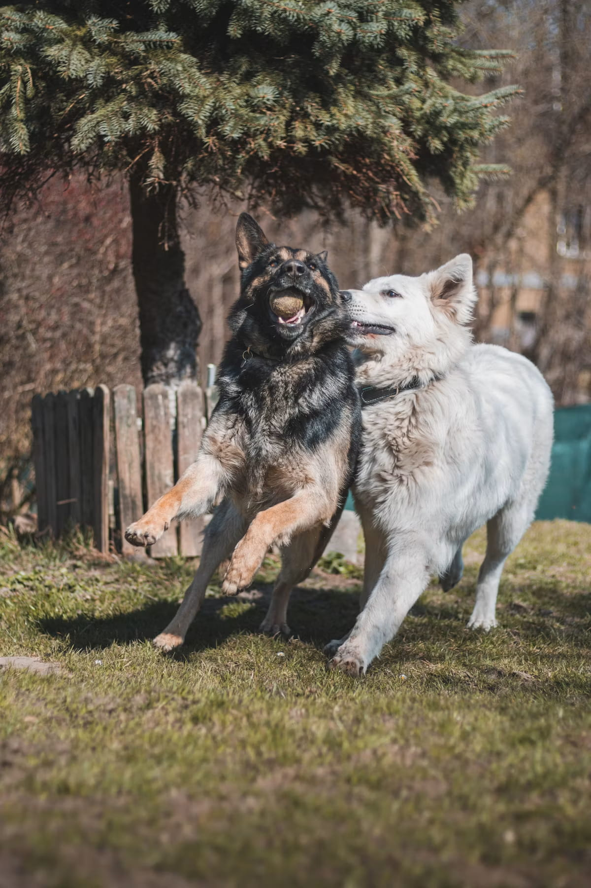

Resource Guarding in Dogs: What It Looks Like and How to Address It

Resource guarding — a dog protecting food, toys, spaces, or even people from perceived competition — is a normal, evolutionarily sensible behavior that becomes a problem mainly in how a household responds to it. Handled well early, mild guarding often resolves. Handled with punishment or confrontation, it frequently gets worse. Here's how to tell what you're dealing with and what actually helps.
What resource guarding actually looks like
It exists on a spectrum, and most dogs display it in some mild form at some point without it being a serious problem:
- Mild: eating faster when approached, a stiff body over a toy, a hard stare ("whale eye") at anyone nearing a bone.
- Moderate: growling, snapping in the air, or blocking access with the body when someone approaches the guarded item.
- Severe: lunging, biting, or guarding that extends to unpredictable triggers (a person simply walking past, not just reaching).
Why it happens
Guarding is rooted in a basic survival instinct — protecting a valuable resource from losing it — and it can be shaped by individual history: a dog that competed with littermates for food, was adopted from a scarce-resource environment, or had items taken away abruptly and often as a puppy may guard more intensely than one who never had reason to worry about losing things.
The single biggest mistake: taking things away by force
Grabbing an item out of a guarding dog's mouth, or physically pulling them away from a food bowl to "prove who's in charge," is the most common way mild guarding escalates into a serious bite risk. From the dog's perspective, every forced removal confirms the exact fear driving the guarding — that people approaching means losing the thing. It doesn't teach calm; it teaches the dog to guard faster and harder next time, or to skip the warning growl altogether.
The trade-up approach
Instead of taking something away, offer something better in exchange, and give it back afterward when appropriate. Approach calmly, drop a higher-value treat near the guarded item (not right on top of it, which can still feel like a threat), and let the dog choose to disengage. Over repeated, low-pressure sessions like this, a dog gradually learns that a person approaching a resource predicts something better arriving, not something being taken.
Preventing guarding in puppies
For puppies with no guarding history yet, occasional supervised practice — approaching while they eat and adding something even better to the bowl, rather than removing it — builds a positive association with people near food from the start. This isn't the same as constantly disturbing a puppy's meals, which can backfire; it's a light, occasional, positive pairing, not a stress test.
Managing guarding around multiple dogs
In multi-dog homes, separate feeding and separate high-value items (see our guide to gear for multi-dog households) prevent most guarding-related conflict between dogs simply by removing the competition, rather than relying on the dogs to work it out.
When to bring in a professional
Guarding that involves biting, that's directed at children, that's escalating over time despite consistent trade-up training, or that extends to guarding a person (not just objects) warrants a certified professional dog trainer or veterinary behaviorist rather than continued DIY attempts. This is one of the behavior categories where a wrong approach carries real safety risk, especially in households with kids.